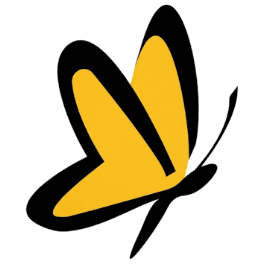

나비웹의 핵심 기술:
PDV와 도우미
나비웹의 핵심은 나비(AI)와 PDV(Private Data Vault, 개인 데이터 금고)입니다. PDV의 바탕에는 OpenHash가 있고, 지금의 웹에서 나비의 손발이 되는 것이 도우미입니다.

나비내 일을 돕는 AI이 페이지는 나비웹이 지향하는 모습과 지금 구현된 것을 함께 설명합니다. 둘이 다른 곳은 따로 표시했고, 전체 현황은 12장에 있습니다.
해시를 이어 붙여 기록의 변경을 드러내는 생각은 Git(2005)이나 비트코인(2008)보다 앞섭니다. 1991년 Haber와 Stornetta가 문서의 작성 시점을 증명하려고 제안했고, 비트코인 논문도 이 연구를 인용합니다. Git은 같은 해시 원리를 개발자가 매일 쓰는 친숙한 예입니다.
나는 내 나비에게 말하고, 내 나비는 상대의 나비와 일을 처리하는 모습을 지향합니다.
업무란 결국 사용자와 사용자 사이의 일입니다. 여기서 사용자는 사람만이 아니라 기관·부서·직책도 포함합니다.
서류를 모으고 주고받는 일
채권자 집회 · 이의 신청 · 판사의 최종 판단까지
나비웹의 목적은 이 질문에 있습니다. 사회·기관·기업·일상의 모든 업무가 이렇게 빠르고 정확해진다면 어떨까요? 판단이 필요한 자리는 사람이 지키고, 기다리고 나르는 시간을 줄이는 것입니다.
아는 만큼, 겪은 만큼 일을 처리합니다
진한 부분은 나의 것, 점선 부분은 나비가 보태는 것
AI란 무엇일까요? 나비웹은 AI를 즉각 불러 쓸 수 있는 집단 지성으로 봅니다. 나비는 모든 개인에게 인류의 집단 지성을 건네는 기술적 수단이 되고자 합니다. 다만 AI의 답도 틀릴 수 있어, 중요한 결정은 확인이 필요합니다.
지금의 코드에서는 최근 PDV 기록의 짧은 요약이 AI에게 참고 자료로 함께 갈 수 있습니다. 전달할 때마다 승인받는 방식이 모두 적용된 것은 아닙니다.
그래서 이전 기록과 대조하고, 다른 센서와 차량의 값과 맞춰 보는 등 여러 겹의 방어가 필요합니다.
해시 함수에 데이터를 넣으면 정해진 길이의 값이 나옵니다. 보통 16진수로 적는데, 나비웹이 쓰는 SHA-256은 64자리, SHA-512는 128자리입니다. 같은 글은 같은 지문, 한 글자만 바뀌어도 전혀 다른 지문이 나옵니다.
지문에서 원문을 거꾸로 풀어내기는 현실적으로 어렵습니다. 다만 짧고 뻔한 내용은 후보를 하나씩 계산해 맞혀 볼 수 있습니다.
누군가 뒤의 지문까지 모두 다시 계산할 수도 있으므로, 예전 지문을 다른 곳에도 남겨 두고 대조해야 합니다.
참여 노드가 같은 장부 전체를 복제해 보관·갱신
원본은 각자 자기 것만 보관, 장부에는 지문
| 구분 | 공개형 블록체인(비트코인 등) | OpenHash(설계) |
|---|---|---|
| 보관 | 전체 노드가 전체 장부를 복제합니다. 사용자가 1억 명이고 모두 전체 노드라면 각자가 다른 99,999,999명의 거래 기록까지 갖게 됩니다. | 각자 자기 원본만 PDV에 보관합니다. |
| 공개 | 장부의 거래 내역을 누구나 볼 수 있습니다(이름 대신 주소로 표시). | 내가 원하는 원본만 골라 보여 줍니다. |
| 에너지 | 작업증명(채굴) 방식은 많은 전력을 씁니다. | 채굴을 하지 않고 계층을 나눠 맡습니다. |
채굴의 전력 소비와 전체 복제의 부담은 블록체인이 널리 쓰이는 데 큰 걸림돌로 꼽혀 왔습니다. 한편 모든 블록체인이 같지는 않습니다. 이더리움은 2022년 지분증명으로 바꿔 에너지 소비를 약 99.95% 줄였다고 밝혔고, 전체 장부를 갖지 않는 가벼운 노드나 허가형 블록체인도 있습니다. OpenHash의 대규모 성능과 안전성은 아직 외부 검증이 필요합니다.
원칙: PDV는 오직 본인만 접근합니다. 본인의 뜻 없이는 내용이 드러나지 않게 하는 것이 나비웹의 목표입니다.
AI 기술만큼 중요한 것이 입력 데이터의 진실성입니다. OpenHash 기반 PDV는 나비웹이 이를 위해 세운 중심 장치입니다. 그런데 지문이 확인해 주는 것은 "바뀌지 않았다"까지입니다. 처음부터 거짓인 데이터는 지문을 남겨도 거짓입니다. 그래서 세 겹이 함께 필요합니다.
전자서명이나 시점확인 같은 다른 기술도 진실성을 지키는 데 쓰입니다. OpenHash는 이런 확인 수단과 함께 쓰일 때 힘을 냅니다.
| 지문으로 확인에 도움이 되는 것 | 보장하지 않는 것 |
|---|---|
| 원본이 지문을 남긴 때와 같은지 | 그 내용이 사실인지 |
| 이어진 기록의 중간이 바뀌었는지 | 잃어버린 원본의 복구 |
| 서명이 있으면 어느 열쇠로 서명했는지 | 그 열쇠를 실제로 누가 썼는지, 법원이 증거로 받아들일지 |
상대 기관에 아직 나비가 없는 동안에는 나비웹 도우미(PC의 Chrome 확장)가 사람처럼 기관 웹사이트를 열고, 칸을 채우고, 발급을 요청합니다. 사용자는 로그인·결제·동의·승인을 맡는 것이 원칙입니다.
AI의 접근을 막는 사이트처럼 도우미가 할 수 없는 곳도 있고, 모든 사이트의 모든 업무가 검증된 것은 아닙니다. 폰 화면의 도우미 동작은 잠정 보류 중입니다.
주민등록번호, 카드 번호, 비밀번호는 AI 대화창에 적지 마십시오.
| 항목 | 상태 |
|---|---|
| 앱의 일반 활동 기록 보고에서 글 대신 지문을 보내는 경로 | 코드 있음 |
| 기기에서 지문을 이어 만들고 계층 장부에 제출 | 코드 있음 |
| 지문 여러 개를 1시간마다 묶은 대표값(머클 루트) | 계산만 · 장부 기록은 미완성 |
| 기기 안 대화 원문·PDV 기록 사본의 암호화 | 미적용 |
| 업무 처리 기록의 해시 전용 저장 | 미적용 · 요약을 글로 저장 |
| L1~L5 전국 규모 운영(OpenHash 네트워크) | 구축 중 · 설계 · 파일럿 단계 |
| 안드로이드·아이폰 앱 | 구축 중 |
| 원문을 보이지 않고 증명하는 기술(영지식증명) | 계획 |
| 대규모 성능·안전성에 대한 외부 검증 | 확인된 자료 없음 |
내 서랍은 내가 관리합니다. 기기를 잃어버리거나 브라우저 데이터를 지우면 백업이 없는 기록은 되찾지 못할 수 있습니다. 화면 잠금을 켜 두십시오. 폰의 백업 사본은 내가 정한 복구 문구가 있어야 열리는 방식(AES-256-GCM)으로 만듭니다.
"코드 있음"은 저장소에 구현 코드가 있다는 뜻이며, 모든 화면과 상황에서 동작함을 이번에 실제 서비스로 시험했다는 뜻은 아닙니다. 화면과 기능에 따라 보관·전송 방식이 다를 수 있습니다.
아닙니다. OpenHash는 지문을 기록하고 변조를 확인하기 위한 장부 기술입니다.
지문만으로 원문을 풀어낼 수는 없습니다. 하지만 내용이 짧거나 예상하기 쉬우면 추측한 글의 지문을 계산해 맞춰 볼 수 있습니다.
장부의 지문으로는 되찾을 수 없습니다. 원본의 백업이 따로 있어야 하고, 암호로 잠근 백업은 복구 문구도 필요합니다.
PDV는 원본을 내가 보관하는 금고, OpenHash는 그 원본이 바뀌지 않았는지 맞춰 볼 지문 장부입니다.